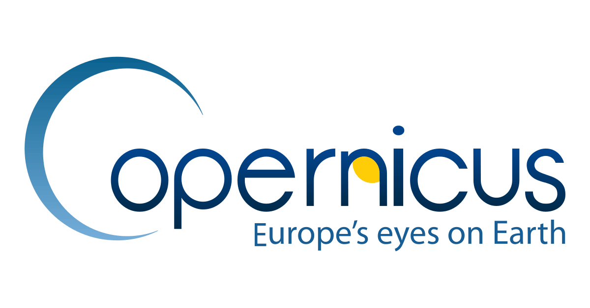
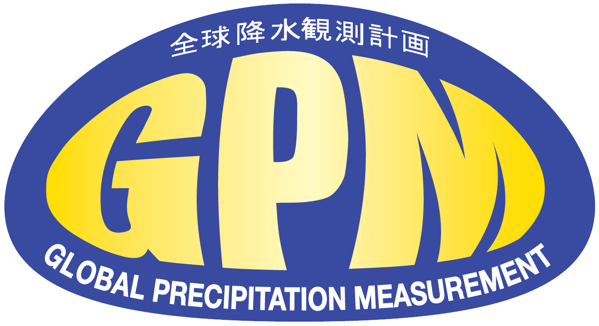

Nossa Solução
Entenda como cruzamos inteligência geográfica orbital, algoritmos preditivos e integração de APIs para transformar a distribuição global de insumos médicos.
A Inversão do Fluxo Logístico
Como o AstroPharma muda o jogo da distribuição de medicamentos na Terra.
Modelo Tradicional Reativo
Movimentação de grandes volumes de medicamentos apenas após o surto ser declarado ou quando os estoques locais zeram.
- Fretes emergenciais de alto custo
- Atrasos críticos na entrega (15+ dias)
- Desperdício por vencimento em locais errados
Modelo AstroPharma Preditivo
Identificação de gatilhos climáticos por satélite e emissão de ordens preventivas semanas antes do surto estourar.
- Distribuição antecipatória inteligente
- Medicamento disponível antes do primeiro caso
- Otimização drástica da Supply Chain
O Algoritmo em Ação
Selecione os diferentes cenários climáticos abaixo para ver as doenças recorrentes nesses cenários, e as condições que a região se encontra.
Alerta de Risco: Dengue & Zika
Ordem de Transferência Preventiva Gerada:
Remanejando 4.500 caixas de Paracetamol, Dipirona e Sais de Reidratação Oral do CD Central para as UBS mapeadas.


NASA POWER & GPM API
Projeto de Ciência Aberta da NASA. O sensor GPM é essencial para medir precipitação extrema (chuvas torrenciais) em zonas remotas.

INPE - CPTEC & BDQueimadas
O Instituto Nacional de Pesquisas Espaciais fornece os modelos climáticos locais e o monitoramento em tempo real de focos de calor e fumaça.
International Space Charter
Consórcio global que libera imagens de altíssima resolução imediatamente após grandes desastres naturais para ajudar na logística emergencial.